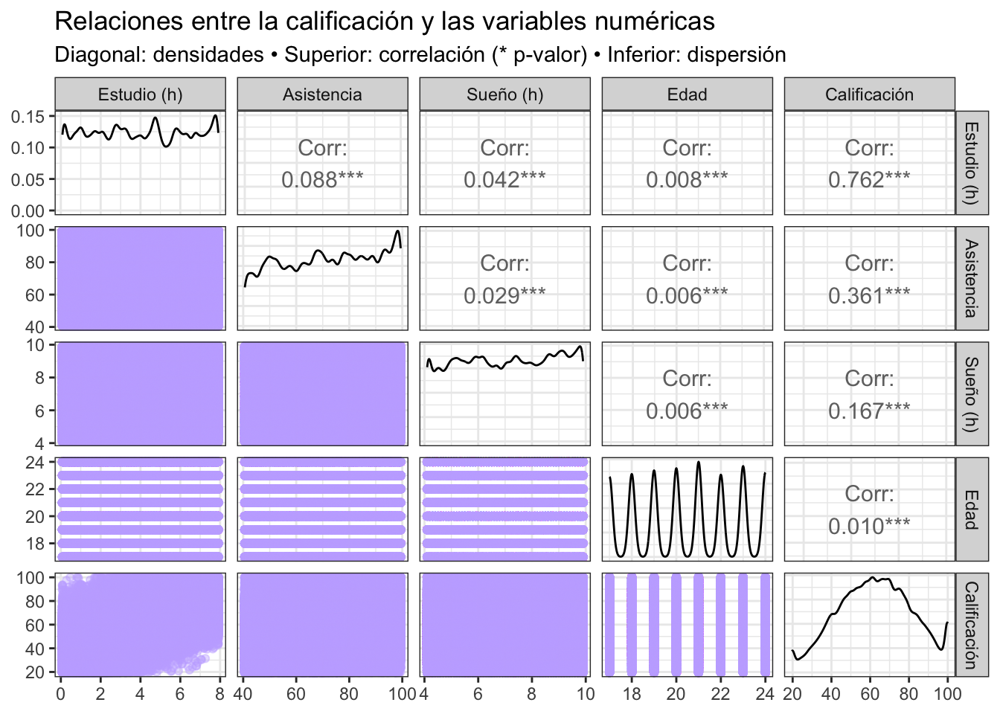
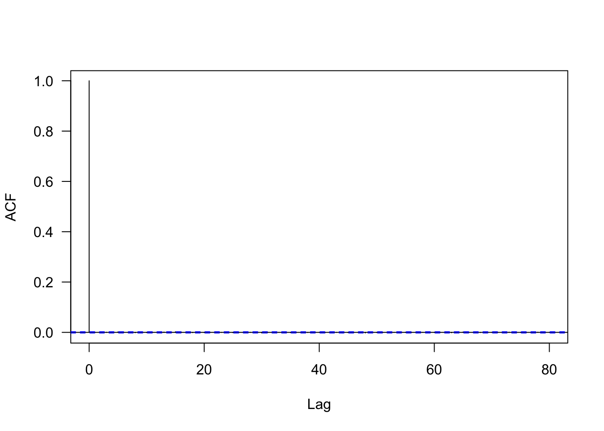
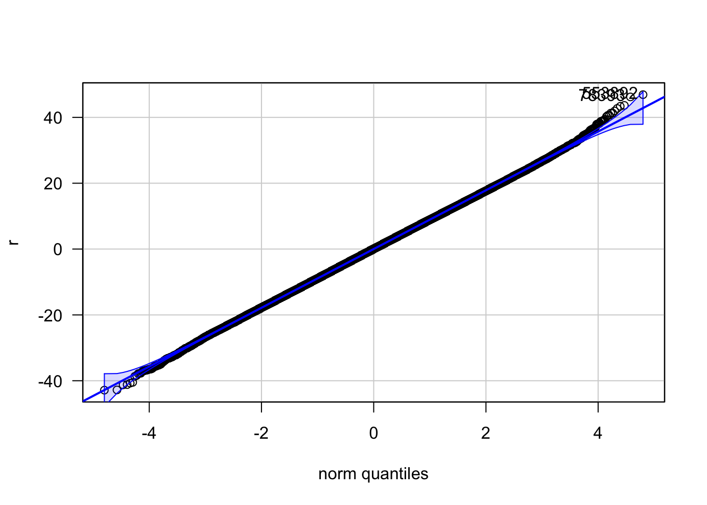
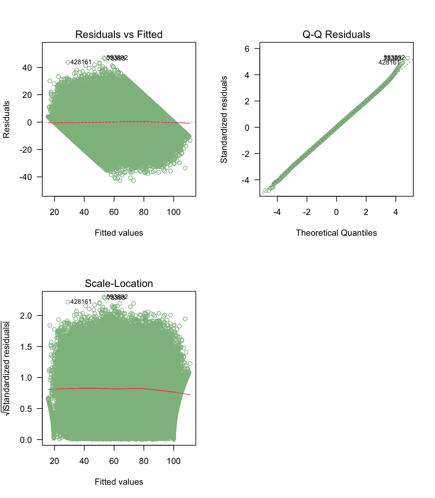
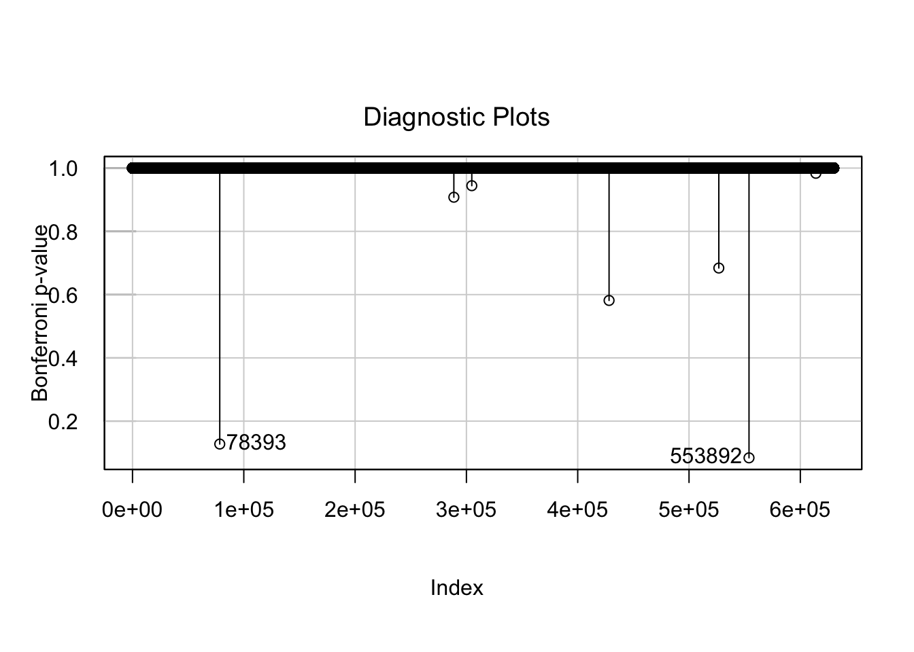
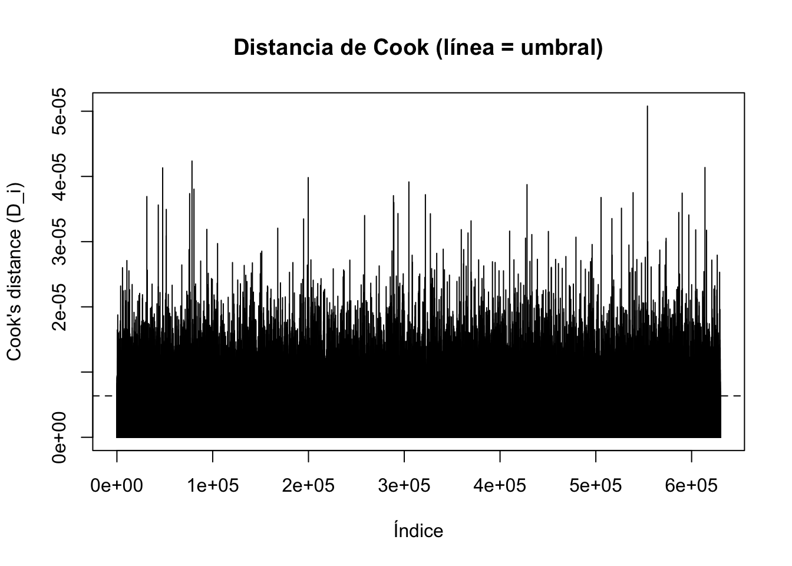

6 Regresión lineal múltiple
En los capítulos anteriores vimos que exam_score se relaciona con varias variables a la vez. Como el número de variables independientes es \(k > 1\), usamos el modelo de regresión lineal múltiple (RLM):
\[ y_i = \beta_0 + \beta_1 x_{i1} + \beta_2 x_{i2} + \cdots + \beta_k x_{ik} + \varepsilon_i, \qquad \varepsilon_i \sim N(0, \sigma^2) \]
6.1 Relación entre las variables numéricas
Exploremos la relación lineal entre exam_score y las variables numéricas con una red de diagramas de dispersión:
# Etiquetas para ejes/paneles
labs_cols <- c("study_hours" = "Estudio (h)",
"class_attendance" = "Asistencia",
"sleep_hours" = "Sueño (h)",
"age" = "Edad",
"exam_score" = "Calificación")
# Red de gráficos:
trainset %>%
ggpairs(
columns = c("study_hours", "class_attendance", "sleep_hours", "age", "exam_score"),
columnLabels = labs_cols[c("study_hours", "class_attendance", "sleep_hours", "age", "exam_score")],
diag = list(continuous = "densityDiag"),
upper = list(continuous = GGally::wrap("cor", method = "pearson", stars = TRUE, size = 4)),
lower = list(continuous = GGally::wrap("points", color = "#c5b0ff", alpha = 0.4))
) +
theme_bw() +
labs(title = "Relaciones entre la calificación y las variables numéricas",
subtitle = "Diagonal: densidades • Superior: correlación (* p-valor) • Inferior: dispersión")
A partir del gráfico se obtiene:
Relación entre
exam_scoreystudy_hours: correlación positiva muy fuerte (\(r = 0.762\)). A más horas de estudio, mayor calificación.Relación entre
exam_scoreyclass_attendance: correlación positiva débil (\(r = 0.361\)).Relación entre
exam_scoreysleep_hours(\(r = 0.167\)) y entreexam_scoreyage(\(r = 0.010\)): sin correlación o muy débil.Relación entre las variables independientes: todas las correlaciones son muy bajas, la mayor es entre
study_hoursyclass_attendance(\(r = 0.088\)). Esto es favorable, ya que sugiere ausencia de multicolinealidad.
Todas las correlaciones salen significativas por el tamaño de la muestra, así que nos guiamos por su magnitud. Aquí usamos el coeficiente de Pearson porque mide la relación lineal, que es la que describe el modelo de regresión; los valores son muy parecidos a los de Spearman del capítulo anterior.
6.2 Análisis de multicolinealidad
Buscamos un modelo en el que las variables independientes estén correlacionadas con la respuesta, pero mínimamente entre ellas. Para detectar cuál de las variables es la más colineal usamos el factor de inflación de varianza (VIF):
\[ VIF_j = \frac{1}{1 - R_j^2} \]
donde \(R_j^2\) es el \(R^2\) del modelo \(x_j \sim x_{-j}\). Decimos que la variable \(x_j\) es responsable por la multicolinealidad si \(VIF_j > 5\).
Hagamos el paso a paso:
# R2_j del modelo x_j ~ demás x
r2_x1 <- summary(lm(study_hours ~ class_attendance + sleep_hours + age, data = trainset))$r.squared
r2_x2 <- summary(lm(class_attendance ~ study_hours + sleep_hours + age, data = trainset))$r.squared
r2_x3 <- summary(lm(sleep_hours ~ study_hours + class_attendance + age, data = trainset))$r.squared
r2_x4 <- summary(lm(age ~ study_hours + class_attendance + sleep_hours, data = trainset))$r.squared
R2_j <- c(study_hours = r2_x1, class_attendance = r2_x2, sleep_hours = r2_x3, age = r2_x4)
VIF_j <- 1 / (1 - R2_j)
kable(data.frame(R2_j = R2_j, VIF = VIF_j), digits = 6)| R2_j | VIF | |
|---|---|---|
| study_hours | 0.009319 | 1.009407 |
| class_attendance | 0.008354 | 1.008424 |
| sleep_hours | 0.002492 | 1.002498 |
| age | 0.000111 | 1.000111 |
Usando la función vif del paquete car:
modelo_num <- lm(exam_score ~ study_hours + class_attendance + sleep_hours + age, data = trainset)
# cálculo del VIF
vif(modelo_num)## study_hours class_attendance sleep_hours age
## 1.009407 1.008424 1.002498 1.000111Los valores coinciden. Cada variable independiente explica menos del 1% de la variabilidad de las demás y los cuatro VIF son prácticamente 1. Puesto que en ninguna variable el \(VIF > 5\), concluimos que no existe multicolinealidad entre las variables numéricas.
6.3 Modelo con variables cualitativas
Para incluir las variables categóricas en el modelo hay que transformarlas en variables dummy, que toman valores de 0 o de 1. Una variable con \(m\) categorías se representa con \(m - 1\) variables dummy y la categoría restante queda como referencia.
En R esta codificación se genera automáticamente al usar lm() cuando la variable se declara como factor. En sleep_quality, facility_rating y exam_difficulty fijamos el orden de los niveles para que la referencia sea la categoría más baja:
df <- trainset %>%
select(-id, -resultado)
df$gender <- factor(df$gender)
df$course <- factor(df$course)
df$internet_access <- factor(df$internet_access)
df$study_method <- factor(df$study_method)
df$sleep_quality <- factor(df$sleep_quality,
levels = c("poor", "average", "good"))
df$facility_rating <- factor(df$facility_rating,
levels = c("low", "medium", "high"))
df$exam_difficulty <- factor(df$exam_difficulty,
levels = c("easy", "moderate", "hard"))- Hagamos primero la regresión de
exam_scorevssleep_quality.
Calculemos el promedio por categoría:
| sleep_quality | promedio |
|---|---|
| poor | 56.99547 |
| average | 62.66200 |
| good | 67.88489 |
# modelo exam_score vs. sleep_quality
modelo_sleep <- lm(exam_score ~ sleep_quality, data = df)
summary(modelo_sleep)##
## Call:
## lm(formula = exam_score ~ sleep_quality, data = df)
##
## Residuals:
## Min 1Q Median 3Q Max
## -48.286 -13.462 0.205 13.438 43.005
##
## Coefficients:
## Estimate Std. Error t value Pr(>|t|)
## (Intercept) 56.99547 0.03976 1433.56 <2e-16 ***
## sleep_qualityaverage 5.66653 0.05694 99.51 <2e-16 ***
## sleep_qualitygood 10.88942 0.05627 193.54 <2e-16 ***
## ---
## Signif. codes: 0 '***' 0.001 '**' 0.01 '*' 0.05 '.' 0.1 ' ' 1
##
## Residual standard error: 18.38 on 629997 degrees of freedom
## Multiple R-squared: 0.05615, Adjusted R-squared: 0.05615
## F-statistic: 1.874e+04 on 2 and 629997 DF, p-value: < 2.2e-16Sin usar el factor, creamos las dos variables dummy:
SleepAvg= 1 sisleep_qualityes “average”, 0 en otro caso.SleepGood= 1 sisleep_qualityes “good”, 0 en otro caso.
La categoría “poor” es la referencia (ambas variables valen 0).
df$SleepAvg = ifelse(df$sleep_quality == 'average', 1, 0)
df$SleepGood = ifelse(df$sleep_quality == 'good', 1, 0)
modelo_sleep_dummy <- lm(exam_score ~ SleepAvg + SleepGood, data = df)
summary(modelo_sleep_dummy)##
## Call:
## lm(formula = exam_score ~ SleepAvg + SleepGood, data = df)
##
## Residuals:
## Min 1Q Median 3Q Max
## -48.286 -13.462 0.205 13.438 43.005
##
## Coefficients:
## Estimate Std. Error t value Pr(>|t|)
## (Intercept) 56.99547 0.03976 1433.56 <2e-16 ***
## SleepAvg 5.66653 0.05694 99.51 <2e-16 ***
## SleepGood 10.88942 0.05627 193.54 <2e-16 ***
## ---
## Signif. codes: 0 '***' 0.001 '**' 0.01 '*' 0.05 '.' 0.1 ' ' 1
##
## Residual standard error: 18.38 on 629997 degrees of freedom
## Multiple R-squared: 0.05615, Adjusted R-squared: 0.05615
## F-statistic: 1.874e+04 on 2 and 629997 DF, p-value: < 2.2e-16Los dos modelos son iguales:
(Intercept)= 56,995: calificación promedio de los estudiantes de la categoría base (sleep_quality= “poor”).sleep_qualityaverage= 5,667: los estudiantes con calidad de sueño average tienen una calificación promedio 5,67 puntos mayor que los de calidad poor \((56.995 + 5.667 = 62.66)\).sleep_qualitygood= 10,889: los estudiantes con calidad de sueño good tienen una calificación promedio 10,89 puntos mayor que los de calidad poor \((56.995 + 10.889 = 67.88)\).
Las dos diferencias son significativas \((p-valor < 0.001)\) y coinciden con los promedios por categoría.
- Hagamos el modelo de RLM con todas las variables:
##
## Call:
## lm(formula = exam_score ~ ., data = df)
##
## Residuals:
## Min 1Q Median 3Q Max
## -42.868 -6.004 0.043 6.039 46.946
##
## Coefficients:
## Estimate Std. Error t value Pr(>|t|)
## (Intercept) 5.7703294 0.1346342 42.859 < 2e-16 ***
## age -0.0136990 0.0049592 -2.762 0.005739 **
## gendermale -0.1054719 0.0274996 -3.835 0.000125 ***
## genderother 0.1905811 0.0274823 6.935 4.08e-12 ***
## courseb.sc -0.1778759 0.0377324 -4.714 2.43e-06 ***
## courseb.tech 0.1670183 0.0363102 4.600 4.23e-06 ***
## courseba -0.0332430 0.0446184 -0.745 0.456241
## coursebba 0.2378968 0.0419531 5.671 1.42e-08 ***
## coursebca 0.0207171 0.0400713 0.517 0.605152
## coursediploma 0.1955463 0.0479471 4.078 4.54e-05 ***
## study_hours 5.6764648 0.0047886 1185.414 < 2e-16 ***
## class_attendance 0.3122542 0.0006462 483.188 < 2e-16 ***
## internet_accessyes 0.0233731 0.0412559 0.567 0.571027
## sleep_hours 1.3216979 0.0064362 205.353 < 2e-16 ***
## sleep_qualityaverage 4.6816427 0.0275835 169.726 < 2e-16 ***
## sleep_qualitygood 8.9204469 0.0272979 326.781 < 2e-16 ***
## study_methodgroup study -7.2353336 0.0353136 -204.888 < 2e-16 ***
## study_methodmixed -4.4499668 0.0352807 -126.130 < 2e-16 ***
## study_methodonline videos -8.2801002 0.0354371 -233.656 < 2e-16 ***
## study_methodself-study -9.1044300 0.0347666 -261.873 < 2e-16 ***
## facility_ratingmedium 3.6866988 0.0272680 135.202 < 2e-16 ***
## facility_ratinghigh 7.2762744 0.0276195 263.447 < 2e-16 ***
## exam_difficultymoderate 0.0146130 0.0259287 0.564 0.573038
## exam_difficultyhard 0.0276475 0.0352776 0.784 0.433209
## ---
## Signif. codes: 0 '***' 0.001 '**' 0.01 '*' 0.05 '.' 0.1 ' ' 1
##
## Residual standard error: 8.895 on 629976 degrees of freedom
## Multiple R-squared: 0.7789, Adjusted R-squared: 0.7789
## F-statistic: 9.651e+04 on 23 and 629976 DF, p-value: < 2.2e-16El modelo completo tiene 23 coeficientes además del intercepto: 4 de las variables numéricas y 19 de las variables dummy. Explica el 77,89% de la variabilidad de exam_score \((R^2_{ajustado} = 0.7789)\).
Los coeficientes de internet_access, exam_difficulty y dos de las categorías de course (ba y bca) no son significativos \((p-valor > 0.05)\). Esto lo revisamos en la selección de variables.
Verifiquemos la multicolinealidad del modelo completo:
## GVIF Df GVIF^(1/(2*Df))
## age 1.000516 1 1.000258
## gender 1.001644 2 1.000411
## course 1.004744 6 1.000394
## study_hours 1.016916 1 1.008423
## class_attendance 1.010352 1 1.005162
## internet_access 1.000761 1 1.000380
## sleep_hours 1.004266 1 1.002131
## sleep_quality 1.005548 2 1.001384
## study_method 1.008415 4 1.001048
## facility_rating 1.003563 2 1.000890
## exam_difficulty 1.001716 2 1.000429Todos los valores son prácticamente 1 y ninguno es mayor que 5: no existe multicolinealidad en el modelo completo.
6.4 Selección de variables
Seleccionamos el mejor modelo con los métodos de selección secuencial, usando el AIC como criterio (menor AIC = mejor):
\[ \mathrm{AIC} = n \ln\left(\frac{SSE}{n}\right) + 2p \]
- Método backward
## Start: AIC=2753680
## exam_score ~ age + gender + course + study_hours + class_attendance +
## internet_access + sleep_hours + sleep_quality + study_method +
## facility_rating + exam_difficulty
##
## Df Sum of Sq RSS AIC
## - exam_difficulty 2 52 49839631 2753677
## - internet_access 1 25 49839604 2753679
## <none> 49839579 2753680
## - age 1 604 49840183 2753686
## - gender 2 9490 49849069 2753796
## - course 6 12090 49851669 2753821
## - sleep_hours 1 3336201 53175780 2794498
## - facility_rating 2 5492942 55332521 2819544
## - study_method 4 7055279 56894858 2837081
## - sleep_quality 2 8455283 58294862 2852400
## - class_attendance 1 18470703 68310282 2952286
## - study_hours 1 111170769 161010348 3492454
##
## Step: AIC=2753677
## exam_score ~ age + gender + course + study_hours + class_attendance +
## internet_access + sleep_hours + sleep_quality + study_method +
## facility_rating
##
## Df Sum of Sq RSS AIC
## - internet_access 1 25 49839656 2753675
## <none> 49839631 2753677
## - age 1 602 49840233 2753683
## - gender 2 9497 49849128 2753793
## - course 6 12100 49851731 2753818
## - sleep_hours 1 3336332 53175963 2794496
## - facility_rating 2 5493382 55333013 2819545
## - study_method 4 7055228 56894859 2837077
## - sleep_quality 2 8456156 58295787 2852406
## - class_attendance 1 18470713 68310344 2952283
## - study_hours 1 111192902 161032533 3492536
##
## Step: AIC=2753675
## exam_score ~ age + gender + course + study_hours + class_attendance +
## sleep_hours + sleep_quality + study_method + facility_rating
##
## Df Sum of Sq RSS AIC
## <none> 49839656 2753675
## - age 1 602 49840259 2753681
## - gender 2 9495 49849151 2753791
## - course 6 12099 49851756 2753816
## - sleep_hours 1 3336425 53176082 2794496
## - facility_rating 2 5493357 55333013 2819543
## - study_method 4 7055236 56894893 2837076
## - sleep_quality 2 8456879 58296535 2852412
## - class_attendance 1 18476752 68316408 2952337
## - study_hours 1 111197322 161036978 3492552## exam_score ~ age + gender + course + study_hours + class_attendance +
## sleep_hours + sleep_quality + study_method + facility_ratingSe parte del modelo completo (AIC = 2753680) y en cada paso se quita la variable cuya eliminación más baja el AIC: primero exam_difficulty (AIC = 2753677) y después internet_access (AIC = 2753675). Quitar cualquiera de las demás sube el AIC, así que el proceso se detiene.
- Método forward
# metodo de forward
modelo_null <- lm(exam_score ~ 1, data = df)
sel_forward <- stepAIC(modelo_null,
scope = list(lower = modelo_null,
upper = modelo_full),
direction = "forward", trace = FALSE)
formula(sel_forward)## exam_score ~ study_hours + class_attendance + sleep_quality +
## study_method + facility_rating + sleep_hours + course + gender +
## age- Método stepwise
sel_both <- stepAIC(modelo_null,
scope = list(lower = modelo_null,
upper = modelo_full),
direction = "both", trace = FALSE)
formula(sel_both)## exam_score ~ study_hours + class_attendance + sleep_quality +
## study_method + facility_rating + sleep_hours + course + gender +
## ageLos tres métodos coinciden: el mejor modelo según el AIC tiene 9 variables y deja por fuera internet_access y exam_difficulty. Las variables entran en orden de importancia: study_hours, class_attendance, sleep_quality, study_method, facility_rating, sleep_hours, course, gender y age.
Verifiquemos el AIC con la fórmula y comparemos con el modelo completo:
n <- nrow(df)
SST <- sum((df$exam_score - mean(df$exam_score))^2)
SSE_full <- sum(residuals(modelo_full)^2)
SSE_sel <- sum(residuals(sel_both)^2)
p_full <- length(coef(modelo_full))
p_sel <- length(coef(sel_both))
tab_aic <- data.frame(
Modelo = c("Completo", "Seleccionado"),
p = c(p_full, p_sel),
SSE = c(SSE_full, SSE_sel),
AIC = c(n * log(SSE_full / n) + 2 * p_full,
n * log(SSE_sel / n) + 2 * p_sel),
R2_ajustado = c(1 - (SSE_full / (n - p_full)) / (SST / (n - 1)),
1 - (SSE_sel / (n - p_sel)) / (SST / (n - 1)))
)
kable(tab_aic, digits = 6)| Modelo | p | SSE | AIC | R2_ajustado |
|---|---|---|---|---|
| Completo | 24 | 49839579 | 2753680 | 0.778919 |
| Seleccionado | 21 | 49839656 | 2753675 | 0.778920 |
Veamos si hay diferencias significativas entre los dos modelos:
## Analysis of Variance Table
##
## Model 1: exam_score ~ study_hours + class_attendance + sleep_quality +
## study_method + facility_rating + sleep_hours + course + gender +
## age
## Model 2: exam_score ~ age + gender + course + study_hours + class_attendance +
## internet_access + sleep_hours + sleep_quality + study_method +
## facility_rating + exam_difficulty
## Res.Df RSS Df Sum of Sq F Pr(>F)
## 1 629979 49839656
## 2 629976 49839579 3 77.316 0.3258 0.8067El modelo seleccionado tiene el menor AIC (2753675 frente a 2753680) con tres coeficientes menos y el mismo \(R^2_{ajustado} = 0.7789\). La prueba F parcial no encuentra diferencias entre los dos modelos \((F_{(3,\,629976)} = 0.33,\ p-valor = 0.807)\): internet_access y exam_difficulty no aportan información.
El modelo seleccionado es:
modelo <- lm(exam_score ~ study_hours + class_attendance + sleep_hours + age +
gender + course + sleep_quality + study_method + facility_rating,
data = df)
summary(modelo)##
## Call:
## lm(formula = exam_score ~ study_hours + class_attendance + sleep_hours +
## age + gender + course + sleep_quality + study_method + facility_rating,
## data = df)
##
## Residuals:
## Min 1Q Median 3Q Max
## -42.864 -6.002 0.043 6.039 46.912
##
## Coefficients:
## Estimate Std. Error t value Pr(>|t|)
## (Intercept) 5.8038250 0.1281467 45.290 < 2e-16 ***
## study_hours 5.6764970 0.0047880 1185.558 < 2e-16 ***
## class_attendance 0.3122589 0.0006461 483.268 < 2e-16 ***
## sleep_hours 1.3216254 0.0064356 205.360 < 2e-16 ***
## age -0.0136836 0.0049590 -2.759 0.005792 **
## gendermale -0.1055543 0.0274990 -3.838 0.000124 ***
## genderother 0.1905802 0.0274819 6.935 4.07e-12 ***
## courseb.sc -0.1779037 0.0377296 -4.715 2.41e-06 ***
## courseb.tech 0.1673336 0.0363046 4.609 4.04e-06 ***
## courseba -0.0334668 0.0446153 -0.750 0.453183
## coursebba 0.2377696 0.0419504 5.668 1.45e-08 ***
## coursebca 0.0206818 0.0400655 0.516 0.605714
## coursediploma 0.1954452 0.0479459 4.076 4.58e-05 ***
## sleep_qualityaverage 4.6818496 0.0275825 169.740 < 2e-16 ***
## sleep_qualitygood 8.9207008 0.0272961 326.812 < 2e-16 ***
## study_methodgroup study -7.2351423 0.0353111 -204.897 < 2e-16 ***
## study_methodmixed -4.4496393 0.0352778 -126.131 < 2e-16 ***
## study_methodonline videos -8.2799828 0.0354349 -233.667 < 2e-16 ***
## study_methodself-study -9.1042337 0.0347655 -261.875 < 2e-16 ***
## facility_ratingmedium 3.6868089 0.0272675 135.209 < 2e-16 ***
## facility_ratinghigh 7.2761754 0.0276180 263.457 < 2e-16 ***
## ---
## Signif. codes: 0 '***' 0.001 '**' 0.01 '*' 0.05 '.' 0.1 ' ' 1
##
## Residual standard error: 8.895 on 629979 degrees of freedom
## Multiple R-squared: 0.7789, Adjusted R-squared: 0.7789
## F-statistic: 1.11e+05 on 20 and 629979 DF, p-value: < 2.2e-16El AIC conserva age, gender y course, pero sus coeficientes son muy pequeños (menos de 0,25 puntos de diferencia en la calificación). Por el tamaño de la muestra salen significativos aunque su efecto práctico es mínimo. El modelo lo explican sobre todo study_hours, class_attendance, sleep_hours, sleep_quality, study_method y facility_rating.
6.5 Estimación de los coeficientes del modelo
En notación matricial el modelo es \(\mathbf{y} = \mathbf{X}\boldsymbol{\beta} + \boldsymbol{\varepsilon}\) y el estimador de \(\boldsymbol{\beta}\) por mínimos cuadrados es:
\[ \hat{\boldsymbol{\beta}} = (\mathbf{X}'\mathbf{X})^{-1}\mathbf{X}'\mathbf{y} \]
Encontremos los coeficientes paso a paso:
# 1) Construir matriz de diseño X (con intercepto y variables dummy) y vector y
X <- model.matrix(modelo)
y <- as.matrix(df$exam_score)
dim(X)## [1] 630000 21# 2) Calcular X'X, su inversa y X'y
XtX <- t(X) %*% X
XtX_inv <- solve(XtX) # (X'X)^{-1}
Xty <- t(X) %*% y
# 3) Estimadores del RLM: beta_hat = (X'X)^{-1} X'y
beta_hat <- XtX_inv %*% Xty
colnames(beta_hat) <- "Estimadores"La matriz \(\mathbf{X}\) tiene \(n = 630000\) filas y \(p = 21\) columnas: el intercepto, las 4 variables numéricas y las 16 variables dummy. Comparemos con los coeficientes de la función lm:
| Paso_a_paso | lm | |
|---|---|---|
| (Intercept) | 5.803825 | 5.803825 |
| study_hours | 5.676497 | 5.676497 |
| class_attendance | 0.312259 | 0.312259 |
| sleep_hours | 1.321625 | 1.321625 |
| age | -0.013684 | -0.013684 |
| gendermale | -0.105554 | -0.105554 |
| genderother | 0.190580 | 0.190580 |
| courseb.sc | -0.177904 | -0.177904 |
| courseb.tech | 0.167334 | 0.167334 |
| courseba | -0.033467 | -0.033467 |
| coursebba | 0.237770 | 0.237770 |
| coursebca | 0.020682 | 0.020682 |
| coursediploma | 0.195445 | 0.195445 |
| sleep_qualityaverage | 4.681850 | 4.681850 |
| sleep_qualitygood | 8.920701 | 8.920701 |
| study_methodgroup study | -7.235142 | -7.235142 |
| study_methodmixed | -4.449639 | -4.449639 |
| study_methodonline videos | -8.279983 | -8.279983 |
| study_methodself-study | -9.104234 | -9.104234 |
| facility_ratingmedium | 3.686809 | 3.686809 |
| facility_ratinghigh | 7.276175 | 7.276175 |
Los coeficientes calculados paso a paso coinciden con los de lm. El modelo estimado es:
\[ \begin{align} \widehat{exam\_score} = {} & 5.804 + 5.676\,study\_hours + 0.312\,class\_attendance + 1.322\,sleep\_hours - 0.014\,age \\ & + \text{efectos de } gender,\ course,\ sleep\_quality,\ study\_method \text{ y } facility\_rating \end{align} \]
y la interpretación sería:
study_hours= 5,676: por cada hora adicional de estudio, la calificación promedio aumenta 5,68 puntos, manteniendo constantes las demás variables.class_attendance= 0,312: por cada punto porcentual adicional de asistencia, la calificación promedio aumenta 0,31 puntos, manteniendo constantes las demás variables.sleep_hours= 1,322: por cada hora adicional de sueño, la calificación promedio aumenta 1,32 puntos, manteniendo constantes las demás variables.age= -0,014: por cada año adicional de edad, la calificación promedio disminuye 0,01 puntos. El efecto es prácticamente nulo.sleep_quality(referencia: poor): los estudiantes con calidad de sueño average tienen en promedio 4,68 puntos más que los de calidad poor, y los de calidad good 8,92 puntos más.study_method(referencia: coaching): todos los coeficientes son negativos. Frente a coaching, la calificación promedio es 4,45 puntos menor con mixed, 7,24 con group study, 8,28 con online videos y 9,10 con self-study.facility_rating(referencia: low): los estudiantes con instalaciones medium tienen en promedio 3,69 puntos más que los de instalaciones low, y los de instalaciones high 7,28 puntos más.gender(referencia: female) ycourse(referencia: b.com): las diferencias con la categoría de referencia son menores de 0,25 puntos.(Intercept)= 5,804: calificación promedio estimada cuando las variables numéricas valen cero y las categóricas están en su referencia. Es un valor teórico porque esas condiciones están fuera del rango de los datos (ageva de 17 a 24 yclass_attendancede 40 a 100).
Ahora, obtengamos los residuos paso a paso:
# Valores ajustados y residuales
y_hat <- X %*% beta_hat
e <- y - y_hat
kable(head(cbind(y_observado = y[, 1], y_ajustado = y_hat[, 1], residuo = e[, 1])))| y_observado | y_ajustado | residuo |
|---|---|---|
| 78.3 | 83.96866 | -5.668664 |
| 46.7 | 64.43856 | -17.738560 |
| 99.0 | 75.77503 | 23.224972 |
| 63.9 | 47.76256 | 16.137440 |
| 100.0 | 95.74497 | 4.255027 |
| 70.1 | 73.06459 | -2.964593 |
Usando la función resid:
## 1 2 3 4 5 6
## -5.668664 -17.738560 23.224972 16.137440 4.255027 -2.9645936.6 Prueba de significancia global
Con la prueba de significancia global determinamos si al menos una de las variables independientes explica a exam_score:
\[ \begin{align} H_0 &: \beta_1 = \beta_2 = \cdots = \beta_k = 0 \\ H_1 &: \beta_j \neq 0 \quad \text{para al menos una } j \end{align} \]
Hagamos el ANOVA paso a paso:
# Dimensiones
n <- nrow(X) # número de observaciones
p <- ncol(X) # número de parámetros (incluye intercepto)
k <- p - 1 # número de variables independientes
# 1) Cálculo algebraico de SST
SST <- as.numeric(t(y) %*% y - (sum(y)^2)/n)
# 2) Cálculo algebraico de SSR
SSR <- as.numeric(t(beta_hat) %*% t(X) %*% y - (sum(y)^2)/n)
# 3) Cálculo algebraico de SSE
SSE <- as.numeric(t(y) %*% y - t(beta_hat) %*% t(X) %*% y)
# 4) ANOVA (df, MS, F0 y p-valor)
df_reg <- k
df_res <- n - k - 1
df_tot <- n - 1
MSR <- SSR / df_reg
MSE <- SSE / df_res
F0 <- MSR / MSE
p_val <- pf(F0, df_reg, df_res, lower.tail = FALSE)
alpha <- 0.05
F_crit <- qf(1 - alpha, df1 = df_reg, df2 = df_res)
# 5) Mostrar resultados en tablas
tab_anova <- data.frame(
`Fuente de variación` = c("Regresión", "Residuales", "Total"),
`Suma de cuadrados` = c(SSR, SSE, SST),
`Gl` = c(df_reg, df_res, df_tot),
`Cuadrado medio` = c(MSR, MSE, NA),
`F0` = c(F0, NA, NA),
`p-valor` = c(p_val, NA, NA),
check.names = FALSE
)
kable(
tab_anova,
digits = 4,
align = "lrrrrr",
caption = "Tabla ANOVA (derivada algebraicamente)"
)| Fuente de variación | Suma de cuadrados | Gl | Cuadrado medio | F0 | p-valor |
|---|---|---|---|---|---|
| Regresión | 175604545 | 20 | 8780227.2283 | 110983.1 | 0 |
| Residuales | 49839656 | 629979 | 79.1132 | NA | NA |
| Total | 225444201 | 629999 | NA | NA | NA |
## [1] 1.570522Usando la función lm:
## value numdf dendf
## 110983.1 20.0 629979.0Como \(F_0 = 110983.08 > F_{0.05,\,20,\,629979} = 1.57\) \((p-valor < 0.001)\), se rechaza \(H_0\). Con una confianza del 95%, al menos una de las variables influye significativamente sobre exam_score: el modelo de regresión es significativo en conjunto. El estadístico coincide con el de summary.
6.7 Coeficiente de determinación y estimación de \(\sigma^2\)
## R2 R2_ajustado
## 0.7789269 0.7789198## [1] 0.7789269## [1] 0.7789198El modelo explica el 77,89% de la variabilidad de exam_score \((R^2 = 0.7789;\ R^2_{ajustado} = 0.7789)\). El resto se debe a factores que no están en el modelo y al error aleatorio.
## sigma2_hat sigma_hat
## 79.11320 8.89456## [1] 79.1132Se obtiene \(\hat{\sigma}^2 = MSE = 79.113\), es decir \(\hat{\sigma} = 8.89\) puntos.
6.8 Prueba individual de significancia para los coeficientes
Una vez rechazada la prueba de significancia global, analizamos la significancia individual de cada coeficiente:
\[ H_0 : \beta_j = 0 \quad vs \quad H_1 : \beta_j \neq 0 \]
\[ t_j = \frac{\hat{\beta}_j}{\sqrt{\hat{\sigma}^2 \, ( \mathbf{X}'\mathbf{X} )^{-1}_{jj}}} \sim t_{n - p} \]
Hagamos el paso a paso:
# Varianza-covarianza de betas
Vb <- as.matrix(MSE * XtX_inv)
# Error estándar de cada beta_hat_j
se_b <- sqrt(diag(Vb))
# Estadístico t calculado
tval <- as.vector(beta_hat) / se_b
df_t <- n - p
# p-valores bilaterales: 2*P(T > |t|)
pval <- 2 * pt(-abs(tval), df = df_t)
kable(data.frame(Estimador = as.vector(beta_hat),
Std.Error = se_b,
t_valor = tval,
p_valor = pval),
digits = 6)| Estimador | Std.Error | t_valor | p_valor | |
|---|---|---|---|---|
| (Intercept) | 5.803825 | 0.128147 | 45.290478 | 0.000000 |
| study_hours | 5.676497 | 0.004788 | 1185.557660 | 0.000000 |
| class_attendance | 0.312259 | 0.000646 | 483.268327 | 0.000000 |
| sleep_hours | 1.321625 | 0.006436 | 205.360177 | 0.000000 |
| age | -0.013684 | 0.004959 | -2.759345 | 0.005792 |
| gendermale | -0.105554 | 0.027499 | -3.838472 | 0.000124 |
| genderother | 0.190580 | 0.027482 | 6.934746 | 0.000000 |
| courseb.sc | -0.177904 | 0.037730 | -4.715235 | 0.000002 |
| courseb.tech | 0.167334 | 0.036305 | 4.609163 | 0.000004 |
| courseba | -0.033467 | 0.044615 | -0.750119 | 0.453183 |
| coursebba | 0.237770 | 0.041950 | 5.667872 | 0.000000 |
| coursebca | 0.020682 | 0.040065 | 0.516201 | 0.605714 |
| coursediploma | 0.195445 | 0.047946 | 4.076367 | 0.000046 |
| sleep_qualityaverage | 4.681850 | 0.027582 | 169.740146 | 0.000000 |
| sleep_qualitygood | 8.920701 | 0.027296 | 326.812177 | 0.000000 |
| study_methodgroup study | -7.235142 | 0.035311 | -204.897210 | 0.000000 |
| study_methodmixed | -4.449639 | 0.035278 | -126.131282 | 0.000000 |
| study_methodonline videos | -8.279983 | 0.035435 | -233.667221 | 0.000000 |
| study_methodself-study | -9.104234 | 0.034766 | -261.875404 | 0.000000 |
| facility_ratingmedium | 3.686809 | 0.027268 | 135.208734 | 0.000000 |
| facility_ratinghigh | 7.276175 | 0.027618 | 263.457286 | 0.000000 |
Usando las funciones lm y summary:
## Estimate Std. Error t value Pr(>|t|)
## (Intercept) 5.80382505 0.1281466959 45.2904775 0.000000e+00
## study_hours 5.67649703 0.0047880396 1185.5576601 0.000000e+00
## class_attendance 0.31225886 0.0006461397 483.2683270 0.000000e+00
## sleep_hours 1.32162536 0.0064356458 205.3601769 0.000000e+00
## age -0.01368358 0.0049589964 -2.7593453 5.791898e-03
## gendermale -0.10555425 0.0274990321 -3.8384716 1.238146e-04
## genderother 0.19058024 0.0274819350 6.9347462 4.073401e-12
## courseb.sc -0.17790371 0.0377295520 -4.7152351 2.414834e-06
## courseb.tech 0.16733365 0.0363045625 4.6091630 4.043725e-06
## courseba -0.03346680 0.0446153092 -0.7501192 4.531832e-01
## coursebba 0.23776962 0.0419504239 5.6678717 1.446451e-08
## coursebca 0.02068183 0.0400654540 0.5162010 6.057142e-01
## coursediploma 0.19544517 0.0479459216 4.0763670 4.575040e-05
## sleep_qualityaverage 4.68184965 0.0275824532 169.7401463 0.000000e+00
## sleep_qualitygood 8.92070080 0.0272961090 326.8121771 0.000000e+00
## study_methodgroup study -7.23514230 0.0353110826 -204.8972099 0.000000e+00
## study_methodmixed -4.44963932 0.0352778411 -126.1312818 0.000000e+00
## study_methodonline videos -8.27998279 0.0354349350 -233.6672213 0.000000e+00
## study_methodself-study -9.10423368 0.0347655165 -261.8754040 0.000000e+00
## facility_ratingmedium 3.68680885 0.0272675347 135.2087343 0.000000e+00
## facility_ratinghigh 7.27617537 0.0276180457 263.4572857 0.000000e+00Los errores estándar, los \(t\) y los p-valores coinciden con los de summary. Con una confianza del 95% se rechaza \(H_0\) en todos los coeficientes, excepto en dos de las variables dummy de course: ba \((t = -0.75,\ p-valor = 0.453)\) y bca \((t = 0.52,\ p-valor = 0.606)\). Es decir, la calificación promedio de esos dos programas no difiere de la del programa de referencia (b.com).
6.9 Intervalos de confianza para \(\beta_j\)
\[ \hat{\beta}_j \pm t_{\alpha/2,\,n-p}\;\sqrt{\hat{\sigma}^2\,\big(\mathbf{X}'\mathbf{X}\big)^{-1}_{jj}} \]
alpha <- 0.05
tcrit <- qt(1 - alpha/2, df = n - p)
lower <- as.vector(beta_hat) - tcrit * se_b
upper <- as.vector(beta_hat) + tcrit * se_b
res_ci <- data.frame(
Coeficiente = colnames(X),
Estimador = as.vector(beta_hat),
Std.Error = se_b,
t_crit = tcrit,
IC_inf = lower,
IC_sup = upper,
check.names = FALSE
)
kable(res_ci, digits = 4, row.names = FALSE)| Coeficiente | Estimador | Std.Error | t_crit | IC_inf | IC_sup |
|---|---|---|---|---|---|
| (Intercept) | 5.8038 | 0.1281 | 1.96 | 5.5527 | 6.0550 |
| study_hours | 5.6765 | 0.0048 | 1.96 | 5.6671 | 5.6859 |
| class_attendance | 0.3123 | 0.0006 | 1.96 | 0.3110 | 0.3135 |
| sleep_hours | 1.3216 | 0.0064 | 1.96 | 1.3090 | 1.3342 |
| age | -0.0137 | 0.0050 | 1.96 | -0.0234 | -0.0040 |
| gendermale | -0.1056 | 0.0275 | 1.96 | -0.1595 | -0.0517 |
| genderother | 0.1906 | 0.0275 | 1.96 | 0.1367 | 0.2444 |
| courseb.sc | -0.1779 | 0.0377 | 1.96 | -0.2519 | -0.1040 |
| courseb.tech | 0.1673 | 0.0363 | 1.96 | 0.0962 | 0.2385 |
| courseba | -0.0335 | 0.0446 | 1.96 | -0.1209 | 0.0540 |
| coursebba | 0.2378 | 0.0420 | 1.96 | 0.1555 | 0.3200 |
| coursebca | 0.0207 | 0.0401 | 1.96 | -0.0578 | 0.0992 |
| coursediploma | 0.1954 | 0.0479 | 1.96 | 0.1015 | 0.2894 |
| sleep_qualityaverage | 4.6818 | 0.0276 | 1.96 | 4.6278 | 4.7359 |
| sleep_qualitygood | 8.9207 | 0.0273 | 1.96 | 8.8672 | 8.9742 |
| study_methodgroup study | -7.2351 | 0.0353 | 1.96 | -7.3044 | -7.1659 |
| study_methodmixed | -4.4496 | 0.0353 | 1.96 | -4.5188 | -4.3805 |
| study_methodonline videos | -8.2800 | 0.0354 | 1.96 | -8.3494 | -8.2105 |
| study_methodself-study | -9.1042 | 0.0348 | 1.96 | -9.1724 | -9.0361 |
| facility_ratingmedium | 3.6868 | 0.0273 | 1.96 | 3.6334 | 3.7403 |
| facility_ratinghigh | 7.2762 | 0.0276 | 1.96 | 7.2220 | 7.3303 |
Usando la función confint.default:
## 2.5 % 97.5 %
## (Intercept) 5.55266214 6.054987956
## study_hours 5.66711265 5.685881416
## class_attendance 0.31099245 0.313525268
## sleep_hours 1.30901173 1.334238995
## age -0.02340304 -0.003964129
## gendermale -0.15945137 -0.051657142
## genderother 0.13671664 0.244443848
## courseb.sc -0.25185227 -0.103955144
## courseb.tech 0.09617801 0.238489280
## courseba -0.12091120 0.053977599
## coursebba 0.15554830 0.319990939
## coursebca -0.05784502 0.099208675
## coursediploma 0.10147289 0.289417452
## sleep_qualityaverage 4.62778903 4.735910260
## sleep_qualitygood 8.86720141 8.974200193
## study_methodgroup study -7.30435075 -7.165933850
## study_methodmixed -4.51878262 -4.380496022
## study_methodonline videos -8.34943399 -8.210531596
## study_methodself-study -9.17237284 -9.036094521
## facility_ratingmedium 3.63336547 3.740252240
## facility_ratinghigh 7.22204499 7.330305740Los dos resultados coinciden: confint.default usa el cuantil de la normal \((z = 1.96)\) y con \(n - p = 629979\) grados de libertad el de la \(t\) de Student es el mismo. Con una confianza del 95%:
study_hours: por cada hora adicional de estudio la calificación promedio aumenta entre 5,667 y 5,686 puntos, manteniendo constantes las demás variables.class_attendance: por cada punto porcentual adicional de asistencia la calificación promedio aumenta entre 0,311 y 0,314 puntos.sleep_hours: por cada hora adicional de sueño la calificación promedio aumenta entre 1,309 y 1,334 puntos.Los intervalos de
courseba \((-0.121,\ 0.054)\) y bca \((-0.058,\ 0.099)\) contienen el 0, lo que coincide con la prueba \(t\). Ningún otro intervalo contiene el 0.
Los intervalos son muy estrechos por el tamaño de la muestra.
6.10 Análisis de residuales
El análisis de residuales en RLM sirve para validar los supuestos del error, identificar observaciones outlier e identificar observaciones influenciales.
6.10.1 Validación de los supuestos
- Independencia en los errores
# prueba de Durbin-Watson
# (reps = 100 porque con 630000 observaciones la simulación del p-valor es muy pesada)
durbinWatsonTest(modelo, reps = 100)## lag Autocorrelation D-W Statistic p-value
## 1 -0.0007133672 2.001422 0.44
## Alternative hypothesis: rho != 0# ACF de los residuales
r <- residuals(modelo) # cálculo de los residuales
acf(r, las = 1, main = "", lag.max = 80)
El estadístico de Durbin-Watson es \(2.001\), la autocorrelación es prácticamente cero \((-0.0007)\) y no se rechaza \(H_0\) \((p-valor > 0.05)\). En el ACF ninguna autocorrelación se sale de las bandas. Se cumple que los residuales del modelo ajustado son independientes.
- Normalidad en los errores
Por el tamaño de la muestra usamos Lilliefors en lugar de Shapiro-Wilk:
##
## Lilliefors (Kolmogorov-Smirnov) normality test
##
## data: r
## D = 0.0020863, p-value = 6.199e-06
## [1] 553892 78393La prueba de Lilliefors rechaza la normalidad \((D = 0.0021,\ p-valor < 0.001)\). Sin embargo, el estadístico \(D\) es muy pequeño y en el Q-Q plot los residuales siguen la recta en casi todo el rango; solo se separan un poco en los extremos. Igual que en los capítulos anteriores, con 630.000 observaciones la prueba detecta desviaciones mínimas. Los residuales tienen un comportamiento aproximadamente normal.
- Media de los errores
##
## One Sample t-test
##
## data: r
## t = -2.7376e-16, df = 629999, p-value = 1
## alternative hypothesis: true mean is not equal to 0
## 95 percent confidence interval:
## -0.02196323 0.02196323
## sample estimates:
## mean of x
## -3.06774e-18Concluimos, con una confianza del 95%, que la media de los residuales es cero a nivel poblacional \((t = 0,\ p-valor = 1)\).
- Varianza constante en los errores
##
## studentized Breusch-Pagan test
##
## data: modelo
## BP = 867.4, df = 20, p-value < 2.2e-16
La prueba de Breusch-Pagan rechaza la varianza constante \((BP = 867.4,\ gl = 20,\ p-valor < 0.001)\). En los gráficos, la dispersión de los residuales es similar en la mayor parte de los valores ajustados y se reduce en los extremos. Esto ocurre porque exam_score está acotada entre 19,6 y 100: el modelo llega a ajustar valores mayores que 100 y allí los residuales solo pueden ser negativos. El supuesto de varianza constante no se cumple en los extremos, así que la inferencia sobre las calificaciones más bajas y más altas hay que tomarla con precaución.
6.10.2 Identificación de outliers
Diremos que la \(i\)-ésima observación es un outlier si su residual estudentizado \(r_i \notin (-3,\,3)\):
## [1] 1723Hay 1.723 observaciones con \(|r_i| > 3\), el 0,27% del total. Es la proporción que se espera en una distribución normal (cerca del 0,3%), así que no es evidencia de valores atípicos. Veamos la prueba de Bonferroni:
## No Studentized residuals with Bonferroni p < 0.05
## Largest |rstudent|:
## rstudent unadjusted p-value Bonferroni p
## 553892 5.27441 1.3323e-07 0.083933
La observación 553892 tiene el mayor residual estudentizado \((r_i = 5.27)\), pero su p-valor de Bonferroni \((0.084)\) es mayor que \(0.05\): no hay evidencia suficiente para concluir que alguna observación sea un outlier.
6.10.3 Identificación de observaciones influenciales
Usamos la distancia de Cook. Decimos que la \(i\)-ésima observación es influencial cuando \(D_i > \frac{4}{n-p-2}\):
# 1) Distancia de Cook
Di <- cooks.distance(modelo)
# 2) Umbral
n <- nobs(modelo)
p <- length(coef(modelo))
umbral <- 4/(n-p-2)
umbral## [1] 6.349438e-06## [1] 28648# 4) Tabla ordenada
ord <- order(Di, decreasing = TRUE)
tab <- data.frame(
idx = ord,
cooks_distance = Di[ord],
supera_umbral = Di[ord] > umbral
)
kable(head(tab, 10), row.names = FALSE)| idx | cooks_distance | supera_umbral |
|---|---|---|
| 553892 | 5.08e-05 | TRUE |
| 78393 | 4.24e-05 | TRUE |
| 613958 | 4.14e-05 | TRUE |
| 47776 | 4.13e-05 | TRUE |
| 199721 | 3.98e-05 | TRUE |
| 304835 | 3.92e-05 | TRUE |
| 428161 | 3.87e-05 | TRUE |
| 80446 | 3.81e-05 | TRUE |
| 538912 | 3.75e-05 | TRUE |
| 590152 | 3.74e-05 | TRUE |
# 5) Gráfico con el umbral
plot(Di, type = "h",
ylab = "Cook's distance (D_i)", xlab = "Índice",
main = "Distancia de Cook (línea = umbral)")
abline(h = umbral, lty = 2)
Hay 28.648 observaciones (el 4,5%) que superan el umbral, pero el umbral es muy pequeño por el tamaño de la muestra \((0.0000063)\) y la mayor distancia de Cook es apenas \(0.00005\). Para saber si esas observaciones controlan el modelo, lo ajustamos sin ellas y comparamos los coeficientes:
modelo_sin <- lm(formula(modelo), data = df[-infl_idx, ])
kable(data.frame(modelo = coefficients(modelo),
modelo_sin = coefficients(modelo_sin),
diferencia = coefficients(modelo_sin) - coefficients(modelo)),
digits = 4)| modelo | modelo_sin | diferencia | |
|---|---|---|---|
| (Intercept) | 5.8038 | 5.1269 | -0.6770 |
| study_hours | 5.6765 | 5.7151 | 0.0386 |
| class_attendance | 0.3123 | 0.3182 | 0.0060 |
| sleep_hours | 1.3216 | 1.3317 | 0.0100 |
| age | -0.0137 | -0.0123 | 0.0014 |
| gendermale | -0.1056 | -0.1019 | 0.0037 |
| genderother | 0.1906 | 0.1987 | 0.0081 |
| courseb.sc | -0.1779 | -0.1612 | 0.0167 |
| courseb.tech | 0.1673 | 0.1966 | 0.0292 |
| courseba | -0.0335 | -0.0445 | -0.0111 |
| coursebba | 0.2378 | 0.2508 | 0.0130 |
| coursebca | 0.0207 | 0.0296 | 0.0089 |
| coursediploma | 0.1954 | 0.2500 | 0.0546 |
| sleep_qualityaverage | 4.6818 | 4.7251 | 0.0432 |
| sleep_qualitygood | 8.9207 | 9.0327 | 0.1120 |
| study_methodgroup study | -7.2351 | -7.3296 | -0.0945 |
| study_methodmixed | -4.4496 | -4.5212 | -0.0715 |
| study_methodonline videos | -8.2800 | -8.4001 | -0.1201 |
| study_methodself-study | -9.1042 | -9.2546 | -0.1503 |
| facility_ratingmedium | 3.6868 | 3.7236 | 0.0368 |
| facility_ratinghigh | 7.2762 | 7.3363 | 0.0601 |
Los coeficientes prácticamente no cambian: la mayor diferencia en una pendiente es de 0,15 puntos (study_method self-study) y ninguno cambia de signo. El modelo ajustado es consistente cuando se remueven estas observaciones y no hay una causa asignable para eliminarlas, así que conservamos el modelo con todos los datos.
6.11 Inferencia para la respuesta
6.11.1 Intervalo de confianza para \(E[Y \mid \mathbf{x}_0]\)
El intervalo de confianza al \(100(1-\alpha)\%\) para \(E[Y\mid \mathbf{x}_0]\) es
\[ \hat{\mu}_{Y\mid \mathbf{x}_0} \pm t_{\alpha/2,\,n-p}\, \sqrt{\hat{\sigma}^2\,\mathbf{x}_0^{\top}(\mathbf{X}^{\top}\mathbf{X})^{-1}\mathbf{x}_0} \]
Supongamos que queremos determinar la calificación de una estudiante de b.tech de 21 años que estudia 4 horas, asiste al 72% de las clases, duerme 7 horas con calidad de sueño average, estudia por su cuenta (self-study) y califica las instalaciones como medium:
dato_nuevo <- data.frame(study_hours = 4, class_attendance = 72,
sleep_hours = 7, age = 21,
gender = "female", course = "b.tech",
sleep_quality = "average",
study_method = "self-study",
facility_rating = "medium")
# cálculo de E[y|x_0]
predict(modelo, newdata = dato_nuevo)## 1
## 59.38823## fit lwr upr
## 1 59.38823 59.30393 59.47253Hagamos el proceso paso a paso:
# 1) Construir la fila de diseño del punto nuevo x0
TT <- delete.response(terms(modelo))
x0 <- model.matrix(TT, dato_nuevo, xlev = modelo$xlevels) # matriz 1x(p)
# 2) Dimensiones
n <- nrow(X) # número de observaciones
p <- length(coef(modelo)) # número de parámetros (incluye intercepto)
gl <- n - p # grados de libertad residuales
# 3) E[Y|x0] estimado
yhat_mean <- drop(x0 %*% beta_hat)
# 4) Estimar sigma^2 = SSE/(n - p)
SSE <- sum(residuals(modelo)^2)
sigma2_hat <- SSE / gl
# 5) se_mean = sqrt(sigma^2 * x0'(X'X)^{-1}x0)
se_mean <- sqrt(drop(x0 %*% XtX_inv %*% t(x0)) * sigma2_hat)
# 6) Valor crítico t para nivel 1 - alpha
alpha <- 0.05
tcrit <- qt(1 - alpha/2, df = gl)
# 7) Intervalo de confianza para E[Y|x0]
ci_low <- yhat_mean - tcrit * se_mean
ci_high <- yhat_mean + tcrit * se_mean
resultado_media <- data.frame(
.fitted = yhat_mean,
se_mean = se_mean,
conf_low = ci_low,
conf_high = ci_high,
df = gl,
level = 1 - alpha
)
kable(resultado_media, digits = 4, row.names = FALSE)| .fitted | se_mean | conf_low | conf_high | df | level |
|---|---|---|---|---|---|
| 59.3882 | 0.043 | 59.3039 | 59.4725 | 629979 | 0.95 |
Los dos resultados coinciden. Se espera que, en promedio, los estudiantes con estas características obtengan una calificación de \(59.39\) puntos. A nivel poblacional, dicho promedio se encontrará en el intervalo \((59.30,\ 59.47)\) con una confianza del 95%.
6.11.2 Intervalo de predicción para una nueva observación
El intervalo de predicción incorpora la incertidumbre adicional del nuevo error \(\varepsilon_0\):
\[ \hat y_0 \;\pm\; t_{\alpha/2,\,n-p}\; \sqrt{\,\hat\sigma^{2}\!\left(1+\mathbf{x}_0^{\top} (\mathbf{X}^{\top}\mathbf{X})^{-1}\mathbf{x}_0\right)} \]
## fit lwr upr
## 1 59.38823 41.95498 76.82149Hagámoslo paso a paso:
# 1) Predicción puntual en x0
yhat_0 <- drop(x0 %*% beta_hat)
# 2) Calcular el leverage de x0: h0 = x0'(X'X)^{-1}x0
h0 <- drop(x0 %*% XtX_inv %*% t(x0))
# 3) se_pred = sqrt(sigma2 * (1 + h0))
se_pred <- sqrt(sigma2_hat * (1 + h0))
# 4) Extremos del intervalo
pred_low <- yhat_0 - tcrit * se_pred
pred_high <- yhat_0 + tcrit * se_pred
resultado <- data.frame(
.fitted = yhat_0,
se_pred = se_pred,
pred_low = pred_low,
pred_high = pred_high,
df = gl,
level = 1 - alpha
)
kable(resultado, digits = 4, row.names = FALSE)| .fitted | se_pred | pred_low | pred_high | df | level |
|---|---|---|---|---|---|
| 59.3882 | 8.8947 | 41.955 | 76.8215 | 629979 | 0.95 |
Para una estudiante con estas características, la calificación estimada es \(59.39\) puntos y, con una confianza del 95%, su calificación se encontrará en el intervalo \((41.95,\ 76.82)\).
El intervalo de confianza es muy estrecho porque el promedio se estima con 630.000 observaciones. El intervalo de predicción es mucho más amplio porque la calificación de un solo estudiante varía alrededor de ese promedio con \(\hat{\sigma} = 8.89\) puntos.